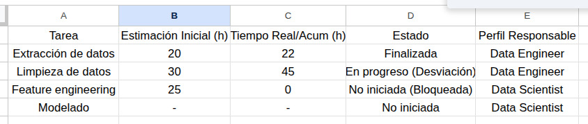
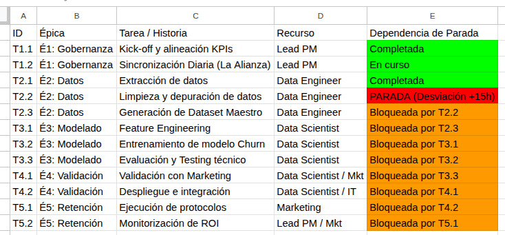
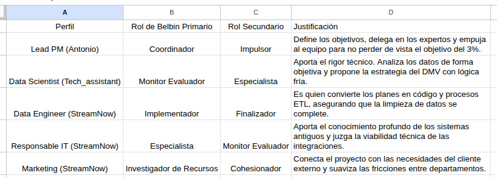

1 — Análisis del estado del proyecto
Analizar si el proyecto se encuentra alineado con la planificación inicial:
El proyecto NO se encuentra alineado respecto a la planificación inicial. El retraso acumulado en la limpieza de datos impide que el Data Scientist inicie el Feature Engineering, que compromete los plazos de entrega.
Identificar las desviaciones existentes:
Acumulamos un retraso, con la limpieza de datos aún abierta. El Data Scientist tiene una desviación de ejecución del 100%. Ahora mismo el proyecto está parado.
Justificar el impacto de dichas desviaciones en el desarrollo del proyecto:
Este retraso supone una parada del proyecto, quiere decir que los tiempos se alargan. Cuando se solucione la parada si no se recortan tiempos en otras fases el proyecto ya supera el tiempo estimado subiendo todas las horas de trabajo, el presupuesto aumenta con más horas de trabajo.


↑ Volver al índice2 — Identificación de problemas
Dependencias entre tareas. Posibles cuellos de botella.
Impacto de la carga de trabajo en los recursos. Cuanto más tiempo esté parado el proyecto más suben los costes y lo más preocupante la incertidumbre y las rencillas entre secciones que tienen que compartir los datos para que el proyecto fluya. Por esta misma razón se creó la alianza objetivo 3% y los almuerzos/reunión diaria. No dejar ningún problema para más tarde, trabajo conjunto y ágil a primera hora de la mañana, mentes frescas y con ganas de avanzar.
Riesgos activos derivados de la situación actual. El retraso acumulado en la Épica 2 empuja todo el calendario. El tiempo se alarga, el presupuesto sube. Se tiene que seguir todos los estándares de calidad y no dejarse llevar por las prisas: la calidad de los datos será el éxito del proyecto.
Datos limpios con calidad = probabilidad alta de proyecto exitoso. Datos limpios con poca calidad = probabilidad alta de proyecto fallido.
↑ Volver al índice3 — Propuesta de acciones
Se deberán proponer acciones concretas que permitan mejorar la situación del proyecto.
Convocar una sesión de emergencia dentro del marco de Sincronización Diaria (T1.2) "almuerzo conjunto" involucrando al Responsable de IT de StreamNow. El Data Scientist de Tech_assistant coge las riendas para desbloquear el proyecto, al mando del equipo de StreamNow.
Acción: Implementar una estrategia de "Dataset Mínimo Viable" (DMV). En lugar de esperar a limpiar el 100% de los datos, se priorizará la limpieza de una muestra representativa.
Justificación: Esto permite que el Data Scientist inicie el Feature Engineering (T3.1) en paralelo sobre ese subconjunto, mientras el Data Engineer completa el resto de la limpieza.
Impacto: Recuperación de horas de retraso acumuladas, solapando fases que antes eran secuenciales.
Demostración a los equipos de StreamNow de que Tech_assistant viene a aportar y trabajar juntos y que solo se podrá conseguir el objetivo trabajando juntos. Cuando se logre el objetivo, este método de trabajo y solución en esta zona de los proyectos estará añadido a la mecánica de trabajo de esta sección. Mismo problema, misma solución.
↑ Volver al índice4 — Comunicación profesional
4.1 — Comunicación 1: Stakeholders de negocio
Asunto: Informe de situación: Optimización de plazos y activación de protocolo de aceleración.
Les informo sobre el avance del proyecto.
Tras finalizar la fase inicial de extracción, la complejidad de los datos históricos de StreamNow requiere un esfuerzo de depuración superior al previsto, lo que ha generado una parada en la fase T2.2.
Para que esto no afecte en tiempo y dinero a la finalización del proyecto, Tech_assistant ha tomado las siguientes decisiones estratégicas:
1. Priorización de Datos Críticos: Hemos implementado una estrategia de "Dataset Mínimo Viable". En lugar de procesar toda la base de datos de forma lineal, estamos priorizando la información con mayor impacto predictivo para que el modelo de Inteligencia Artificial empiece a trabajar de inmediato.
2. Liderazgo Activo: Nuestro experto en Ciencia de Datos ha tomado el mando de la fase de preparación para coordinarse directamente con el equipo de IT de la casa, asegurando que la calidad de la información sea la adecuada desde el primer minuto.
3. Seguimiento en "La Alianza 3%": Aprovechamos nuestras sesiones diarias de coordinación para supervisar este avance minuto a minuto, garantizando una respuesta ágil ante cualquier nuevo imprevisto.
Estamos convencidos de que este ajuste no solo protege la fecha de entrega, sino que establece un método de trabajo más eficiente para los futuros proyectos de datos en la compañía.
Atentamente,
Lead Project Manager – Tech_assistant
4.2 — Comunicación 2: Equipo técnico
Asunto: Coordinación técnica: Implementación de estrategia DMV y desbloqueo de la T2.2
Hola equipo,
Como hemos analizado en el seguimiento de Jira, la tarea T2.2 (Limpieza de datos) presenta una total parada debido a problemas imprevistos. Este bloqueo está impidiendo que iniciemos el Feature Engineering.
Es el momento de demostrar la capacidad técnica de "La Alianza 3%". Para convertir este obstáculo en una ventaja competitiva, a partir de hoy pasamos a la ofensiva con estos cambios:
Estrategia DMV (Dataset Mínimo Viable): No esperaremos a la limpieza total del histórico. Vamos a definir una muestra representativa crítica. El Data Scientist de Tech_assistant liderará la definición de este subconjunto para asegurar que el modelo pueda entrenarse en paralelo a la limpieza del resto de datos.
Coordinación con IT: Necesitamos que el equipo de IT de StreamNow nos apoye en la validación rápida de estos campos clave para evitar retrabajos.
Próximos pasos (Sincronización T1.2): Mañana, durante nuestro "almuerzo conjunto de la Alianza", definiremos técnicamente las tablas y variables que formarán parte de este primer bloque de trabajo.
El objetivo es solapar fases para recuperar el tiempo perdido. Una vez validada esta mecánica, la integraremos como el estándar de trabajo para esta sección en futuras iteraciones.
Contamos con vuestra experiencia para sacar esto adelante con éxito. Hagamos que ocurra compañeros.
Antonio López – Tech_assistant
↑ Volver al índice5 — Gestión de equipos — Roles de Belbin
Roles Mentales (Cerebro, Monitor Evaluador, Especialista): Aportan el conocimiento crítico y el análisis. En nuestro equipo, están representados por el Data Scientist y el Responsable de IT.
Roles Sociales (Coordinador, Investigador de Recursos, Cohesionador): Facilitan la comunicación y la unión. Representados por el Lead PM (Antonio) y Marketing.
Roles de Acción (Impulsor, Implementador, Finalizador): Se centran en la ejecución y el cumplimiento de plazos. Representados por el Data Engineer y el perfil híbrido de Antonio.

↑ Volver al índice6 — Gestión de conflictos
Aplicamos técnicas de teoría de juegos y de "el adulto en la máquina". Para resolver este conflicto, vamos a aplicar un enfoque donde la objetividad técnica elimine la carga emocional. El objetivo es que el Dato mate al Relato y alcancemos un equilibrio donde ambos ganen, win to win.
1. Identificación del Origen del Conflicto (El "Relato") — Atribución de culpa.
El relato del Data Scientist (DS): "No puedo trabajar porque el dato es basura" (Posición defensiva/crítica).
El relato del Data Engineer (DE): "El dato está así porque nadie me dijo cómo lo querían" (Posición reactiva/evasiva).
El origen real: Una ruptura en la transacción de comunicación y un juego de "suma cero" donde admitir un error se percibe como una derrota profesional.
2. Análisis de Impacto
Parálisis Crítica: El 100% de la Épica 3 (Modelado) está bloqueada.
Degradación de la Cultura: Si el equipo de "La Alianza" se divide en "bandos", el modelo híbrido de Tech_assistant fracasa.
Coste de Oportunidad: Cada día de discusión son clientes que abandonan StreamNow sin que la IA pueda predecirlo.
3. Estrategia de Gestión: "El Adulto en la Máquina" y Teoría de Juegos
Adulto en la máquina: Convocar una reunión de "Sincronización Técnica de Datos". Intervención: qué datos necesitamos, cómo los conseguimos.
Teoría de Juegos: Hacia el Equilibrio de Cooperación Win-Win. Actualmente, el DS y el DE están en un "Dilema del Prisionero": si ambos se culpan, el proyecto muere. Si ambos colaboran, el proyecto se salva.
La Solución:
1. El DS (Experto) define qué 5 variables son estrictamente necesarias para empezar (Dato).
2. El DE se compromete a limpiar solo esas 5 variables en un sprint de 48 horas.
Resultado: El DS puede trabajar (Gana) y el DE reduce su carga de trabajo inmediata (Gana). El "Relato" de los requisitos pasados se vuelve irrelevante frente al "Dato" de la necesidad actual.
Conclusión de la Estrategia: Al aplicar el Adulto en la Máquina, eliminamos el ruido emocional. Al aplicar la Teoría de Juegos, incentivamos la cooperación sobre la culpa.
↑ Volver al índice